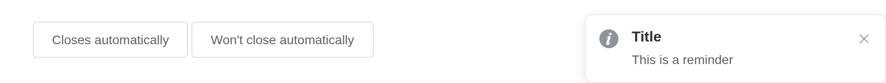
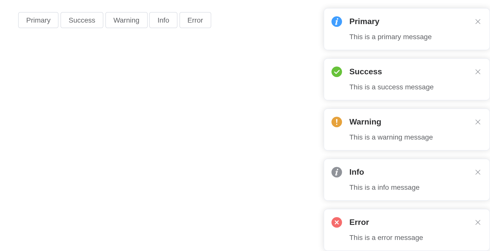
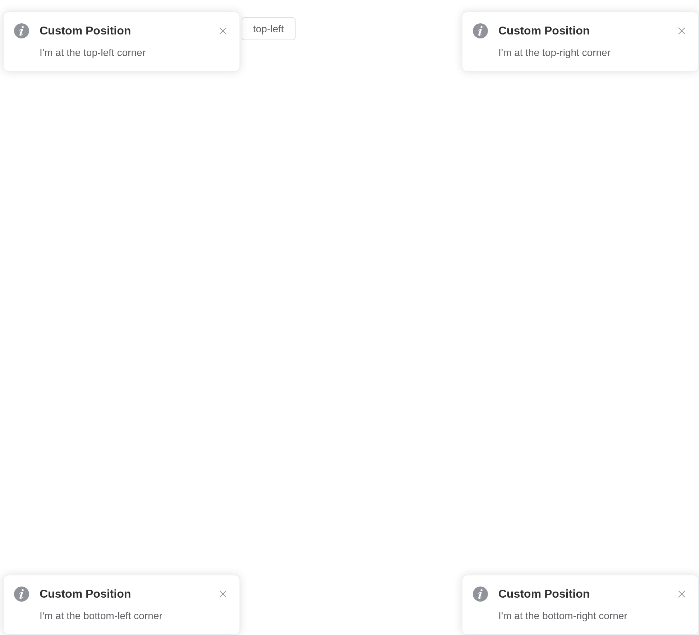
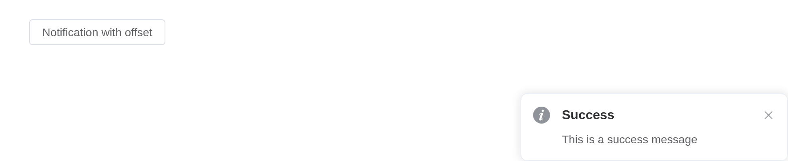
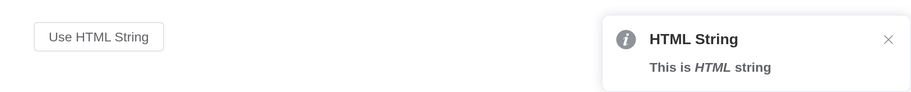
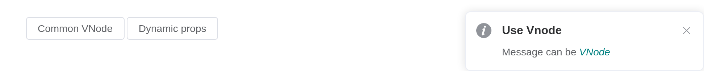
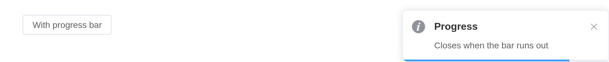
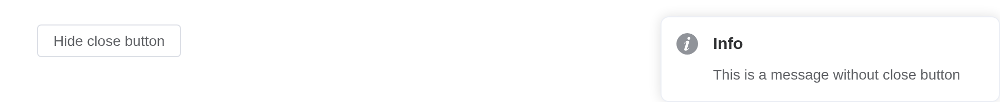

Displays a global notification message at a corner of the page.
Basic usage
Element Plus has registered the $notify method and it
receives an object as its parameter. In the simplest case, you can set
the title field and themessage field for the
title and body of the notification. By default, the notification
automatically closes after 4500ms, but by setting duration
you can control its duration. Specifically, if set to 0, it
will not close automatically. Note that duration receives a
Number in milliseconds.
Notifications are sent from the server,
el_notification(session, ...).
ui <- el_page(el_button("show", "Closes automatically", plain = TRUE))
server <- function(input, output, session) {
observeEvent(
input$show,
el_notification(session, title = "Title", message = "This is a reminder")
)
}
shinyApp(ui, server)
With types
We provide five types: primary, success, warning, info and error.
Element Plus provides five notification types: primary,
success, warning, info and
error. They are set by the type field, and
other values will be ignored. We also registered methods for these types
that can be invoked directly like open3 and
open4 without passing a type field.
primary has been added in 2.9.11.
types <- c("primary", "success", "warning", "info", "error")
ui <- el_page(lapply(types, function(t) {
el_button(paste0("n_", t), tools::toTitleCase(t), plain = TRUE)
}))
server <- function(input, output, session) {
for (t in types) {
local({
t <- t
observeEvent(
input[[paste0("n_", t)]],
el_notification(
session,
title = tools::toTitleCase(t),
type = t,
message = paste("This is a", t, "message")
)
)
})
}
}
shinyApp(ui, server)
Custom position
Notification can emerge from any corner you like.
The position attribute defines which corner Notification
slides in. It can be top-right, top-left,
bottom-right or bottom-left. Defaults to
top-right.
pos <- c("top-right", "bottom-right", "bottom-left", "top-left")
ui <- el_page(lapply(pos, function(p) {
el_button(paste0("n_", gsub("-", "_", p)), p, plain = TRUE)
}))
server <- function(input, output, session) {
for (p in pos) {
local({
p <- p
observeEvent(
input[[paste0("n_", gsub("-", "_", p))]],
el_notification(
session,
title = "Custom Position",
position = p,
message = paste("I'm at the", p, "corner")
)
)
})
}
}
shinyApp(ui, server)
With offset
Customize Notification’s offset from the edge of the screen.
Set the offset attribute to customize Notification’s
offset from the edge of the screen. Note that every Notification
instance of the same moment should have the same offset.
ui <- el_page(el_button("show", "Notification with offset", plain = TRUE))
server <- function(input, output, session) {
observeEvent(
input$show,
el_notification(
session,
title = "Success",
offset = 100,
message = "This is a success message"
)
)
}
shinyApp(ui, server)
Use HTML string
message supports HTML string.
Set dangerouslyUseHTMLString to true and
message will be treated as an HTML string.
ui <- el_page(el_button("show", "Use HTML String", plain = TRUE))
server <- function(input, output, session) {
observeEvent(
input$show,
el_notification(
session,
title = "HTML String",
dangerously_use_html_string = TRUE,
message = "<strong>This is <i>HTML</i> string</strong>"
)
)
}
shinyApp(ui, server)
Warning
Although
messageproperty supports HTML strings, dynamically rendering arbitrary HTML on your website can be very dangerous because it can easily lead to XSS attacks. So whendangerouslyUseHTMLStringis on, please make sure the content ofmessageis trusted, and never assignmessageto user-provided content.
Message using functions
message can be VNode.
After 2.9.0, message supports a function whose return
value is a VNode.
A message can be a VNode, given as JS() code calling
Vue.h(); one whose props change is a function returning
it.
ui <- el_page(
el_button("open", "Common VNode", plain = TRUE),
el_button("open1", "Dynamic props", plain = TRUE)
)
server <- function(input, output, session) {
observeEvent(input$open, {
el_notification(
session,
title = "Use Vnode",
message = JS(
"Vue.h('p', null, [
Vue.h('span', null, 'Message can be '),
Vue.h('i', { style: 'color: teal' }, 'VNode')
])"
)
)
})
observeEvent(input$open1, {
el_notification(
session,
title = "Use Vnode",
message = JS(
"(function() {
var checked = Vue.ref(false);
return function() {
return Vue.h(ElementPlus.ElSwitch, {
modelValue: checked.value,
'onUpdate:modelValue': function(v) { checked.value = v; }
});
};
})()"
)
)
})
}
shinyApp(ui, server)
With progress bar
Display a progress bar indicating the remaining time before the notification auto-closes.
Set progress to true to enable the progress
bar. The progress bar will show a countdown matching the
duration. Pass an object to progress to
customize it with the options of Progress, e.g. color,
which overrides the type-based status color. When
pauseOnHover is true (default), hovering over
the notification will pause both the timer and the progress bar.
ui <- el_page(el_button("show", "With progress bar", plain = TRUE))
server <- function(input, output, session) {
observeEvent(
input$show,
el_notification(
session,
title = "Progress",
progress = TRUE,
duration = 5000,
message = "Closes when the bar runs out"
)
)
}
shinyApp(ui, server)
Hide close button
It is possible to hide the close button
Set the showClose attribute to false so the
notification cannot be closed by the user.
ui <- el_page(el_button("show", "Hide close button", plain = TRUE))
server <- function(input, output, session) {
observeEvent(
input$show,
el_notification(
session,
title = "Info",
type = "info",
show_close = FALSE,
message = "This is a message without close button"
)
)
}
shinyApp(ui, server)
Global method
Element Plus has added a global method $notify for
app.config.globalProperties. So in a vue instance you can
call Notification like what we did in this page.
Local import
In this case you should call ElNotification(options). We
have also registered methods for different types,
e.g. ElNotification.success(options). You can call
ElNotification.closeAll() to manually close all the
instances. In 2.10.5 you can manually update the offsets of all
instances in a specific direction by calling
ElNotification.updateOffsets(position).
App context inheritance > 2.0.4
Now notification accepts a context as second parameter
of the message constructor which allows you to inject current app’s
context to notification which allows you to inherit all the properties
of the app.
You can use it like this:
Tip
If you globally registered ElNotification component, it will automatically inherit your app context.
API
Element Plus’s tables, and beside each entry where it is in R.
Options
| Element | In R | Description | Type | Accepted | Default |
|---|---|---|---|---|---|
title |
title |
title | 1 | ’’ | |
message |
message |
description text |
2 /
3 / 4() => VNode
|
’’ | |
dangerouslyUseHTMLString |
dangerously_use_html_string |
whether message is treated as HTML string |
5 | false | |
type |
type |
notification type |
6'primary' (2.9.11) \\| 'success' \\| 'warning' \\| 'info' \\| 'error' \\| ''
|
’’ | |
icon |
icon |
custom icon component. It will be overridden by
type
|
7 / 8 | — | |
customClass |
custom_class |
custom class name for Notification | 9 | ’’ | |
duration |
duration |
duration before close. It will not automatically close if set 0 | 10 | 4500 | |
position |
position |
custom position |
11'top-right' \\| 'top-left' \\| 'bottom-right' \\| 'bottom-left'
|
top-right | |
showClose |
show_close |
whether to show a close button | 12 | true | |
onClose |
input$<id>_close |
callback function when closed |
13() => void
|
— | |
onClick |
input$<id>_click |
callback function when notification clicked |
14() => void
|
— | |
offset |
offset |
offset from the top edge of the screen. Every Notification instance of the same moment should have the same offset | 15 | 0 | |
appendTo |
append_to |
set the root element for the notification, default to
document.body
|
16 / 17 | — | |
zIndex |
z_index |
initial zIndex | 18 | 0 | |
closeIcon |
close_icon |
custom close icon | 19 / 20 | Close | |
progress |
progress |
progress bar indicating auto-close countdown. Set true
to show a default bar, or pass an object with Progress options to customize it
(percentage, type, duration,
indeterminate and width are excluded) |
21 / 22 | false | |
pauseOnHover |
pause_on_hover |
whether to pause the timer when hovering over the notification | 23 | true |